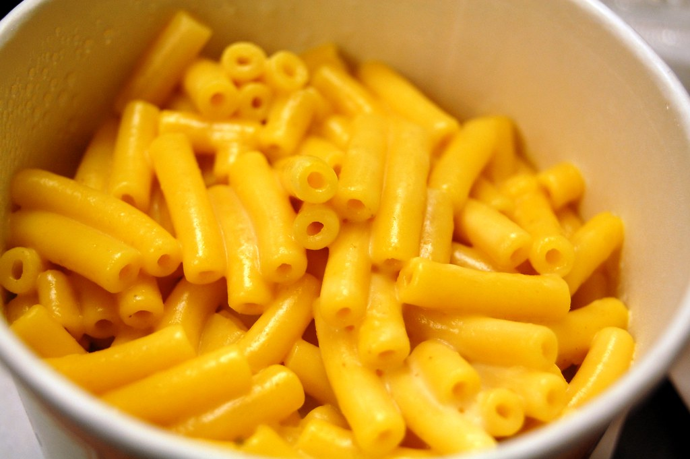

Breakfasts
Lunches
Dinners
Desserts
Mac-n-Cheese

Mac-n-cheese is a delicious dish that is easy and fast to make. Little kids love it and it is very filling!
Ingredients
- Elbow Noodles
- Regu Cheese Sauce
- Salt
Preparation
Bring a pot of water to a rolling boil.
- Once water is boiling, add elbow noodles to water.
- Add salt to taste.
- After noodles are fully cooked (around 12 minutes) remove from heat and strain.
- Wash strained noodles and return to pot.
- Add Ragu cheese sauce and mix together to serve.